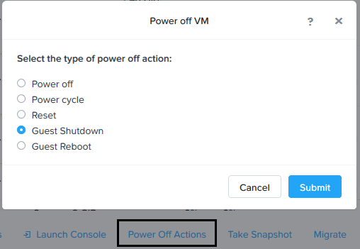
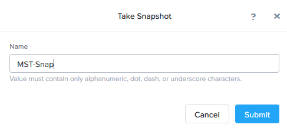
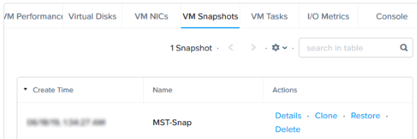
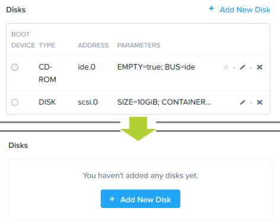
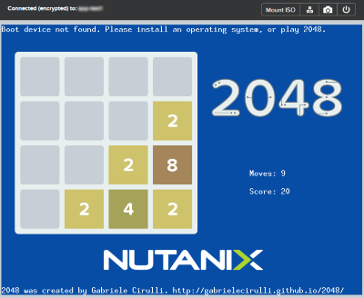
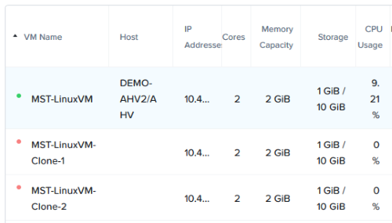
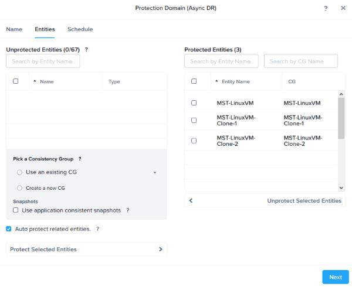
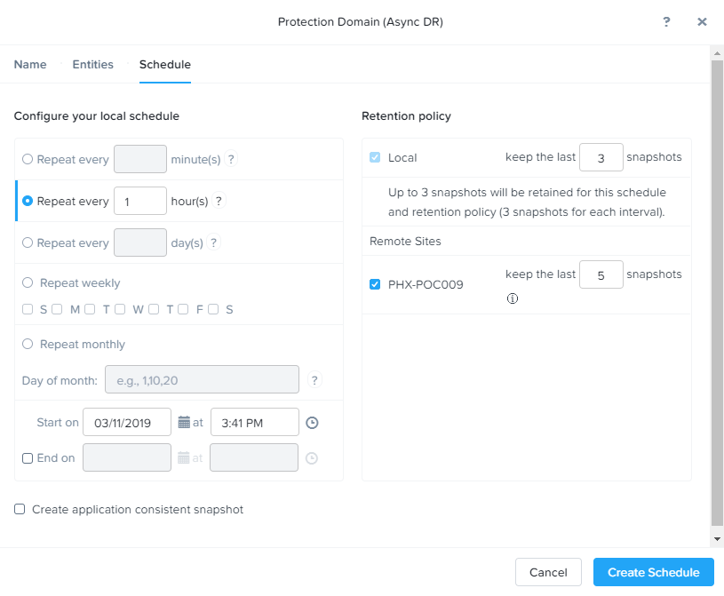

Lab 6: Data Protection¶
Nutanix bietet die Möglichkeit VM- / vDisk-level basierte Storage Snapshots anzulegen. Protection Domains (PDs) sind ein Konstrukt um VMs zu gruppieren und darauf Snapshots und Replikations-Policies anzuwenden.
In diesem Lab werden Sie Prism Element nutzen um VM-Snapshots zu erstellen und VMs aus diesen Snapshots wiederherzustellen sowie eine Protection Domain für Ihre VMs anzulegen.
VM-Snapshots¶
In Prism Element > VM > Table wählen Sie Ihre Initialen-Linux-VM.
Wenn die VM angeschaltet sein sollte, fahren Sie die VM herunter Guest Shutdown.
Wählen Sie die VM und klicken Sie auf Take Snapshot innerhalb des Menüs unterhalb der Tabelle.
Geben Sie einen Namen für Ihren Snapshot an und klicken Sie auf Submit.
Klicken Sie auf den VM Snapshots-Tab unterhalb der Tabelle und sehen Sie sich nun die verfügbaren Snapshots für die ausgewählte VM an.
Unter Actions, klicken Sie auf Details um die Eigenschaften der VM zum Zeitpunkt der Erstellung des Snapshots zu sehen.
Jetzt wird es Zeit die VM zu zerstören!
Nun klicken Sie auf Update um die VM zu modifizieren. Jetzt entfernen Sie sowohl das CD-ROM Laufwerk als auch die DISK durch anklicken des X Symbols neben den jeweiligen Devices. Klicken Sie danach auf Save.
Starten Sie die VM (Power on) und öffnen Sie das Consolen Fenster (Launch Console).
Note
Wie Sie in der Abbildung sehen können, hat die VM keine Disk mehr von der sie booten kann. Sie zeigt daher das 2048ger Spiel an.
Schalten Sie die nun VM aus (Power off).
Unter VM Snapshots wählen Sie Ihren zuvor von dieser VM erstellten Snapshot aus und klicken auf Restore um die VM wieder in den ursprünglichen und funktionsfähigen Zustand zu versetzen. (Alternativ können Sie auch auf Clone klicken um einen Restore in Form einer (oder mehrerer) neuen VM(s) durchzuführen.
Schalten Sie die VM nun wieder ein und verifizieren, ob die VM erfolgreich bootet.
Wie vorher erwähnt, nutzt die Nutanix-Snapshot-Technologie das redirect-on-write Verfahren, welches ohne verkettete Snapshots auskommt und dadurch höchste Performance bietet.
Protection-Domains¶
Eine Protection Domain (PD) stellt eine logische Gruppierung von VM-Objekten dar, welche zeitgesteuert repliziert werden. Zur Erstellung einer PD klicken Sie nun Prism Element > Data Protection > Table und klicken dann auf + Protection Domain > Async DR.
Note
Eine synchrone Replikation in Verbindung mit Metro Availability wird aktuell ausschließlich auf der Basis des VMware ESXi-Hypervisors unterstützt, wird aber zu einem späterem Zeitpunkt auch für AHV erwartet.
Geben Sie nun einen Namen für die zu erstellende Protection-Domain in das Formular ein und klicken auf Create.
Suchen Sie nun durch Filterung oder durch scrollen die von Ihnen erstellten VMs im linken Teil des Fensters unter Unprotected Entities und wählen diese dann durch anklicken aus um sie in die PD aufzunehmen.
Klicken Sie nun auf Protect Selected Entities links unten im Fenster und warten bis die ausgewählten VMs im linken Feld des Fensters unter Protected Entities erscheinen.
Consistency-Groups erlauben es Ihnen mehrere VMs zu gruppieren um Snapshots zum gleichen Zeitpunkt aufnehmen zu können, da die VMsz.B. zur gleichen Anwendung gehören.
Note
Mit Nutanix-Snapshots können Anwendungskonsistente-Snapshots für unterstützte Betriebssysteme durchgeführt werden. Voraussetzung hierfür ist, dass die Nutanix-Guest-Tools (NGT) in den entsprechenden VMs installiert sind.
Klick Sie nun auf Next.
Klick Sie bitte jetzt auf New Schedule um die Recovery Point Objective (RPO) sowie die Retention Policy zu definieren.
Definieren Sie Ihre gewünschte Snapshot-Frequenz, indem Sie z.B. Repeat every 1 hour(s) einstellen. Hierdurch wird dann jede Stunde ein Snapshot erzeugt. Stellen Sie dann noch die Start-Time ein und klicken im Anschluss daran dann auf Create Schedule und dann auf Close.
Note
Sie können mit AHV unter Einsatz der NearSync-Technologie bereits heute schon einen RPO von einer Minute erreichen.
Note
Sie können mehrere Scheduler für die gleiche PD verwenden, was Ihnen erlaubt eine beliebige Anzahl X an Snapshots entweder stündlich, täglich oder monatlich zu erzeugen oder vorzuhalten.
Sie können auch eine Retention Policy konfigurieren bei der z.B. die letzten 5 Snapshots erhalten bleiben.
Note
In Umgebungen, in denen ein Nutanix-Remote-Cluster betrieben wird, kann die Replikation auf der Remote Seite definiert werden und auch hierbei kann die Anzahl der vorzuhaltenden Snapshots entsprechend eingestellt werden.
Klick auf Create Schedule.
Klick auf Close um das Lab abzuschließen.
Und das war’s auch schon! Sie haben nun erfolgreich eine der nativen Data Protection Optionen in Prism-Element konfiguriert.
Zusammenfassung¶
Nutanix bietet unterschiedliche Data-Protection-Lösungen für virtuelle Datacenters anhand vieler verschiedener Möglichkeiten. Darunter befinden sich u. a. one-to-one oder one-to-many Replikationen. Die Möglichkeiten der Nutanix-Data-Protection-Funktionen beinhalten die VM-, File- und Volume-Group-Ebene, sodass VMs und Daten in einem geschützen und abgesicherten Zustand bleiben. VM-Level-Snapshots und Replikations-Regeln können für jeden unterstützten Hypervisor direkt aus Prism-Element heraus durchgeführt werden.